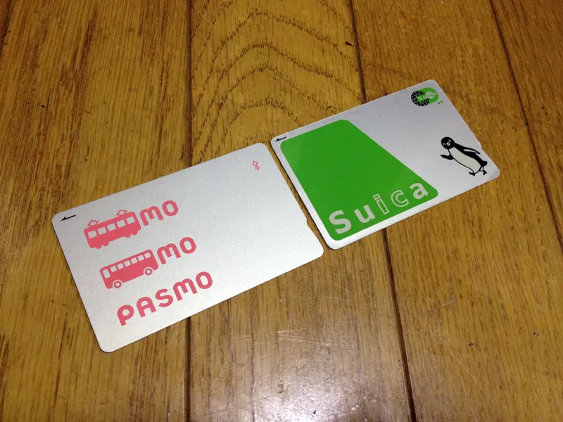
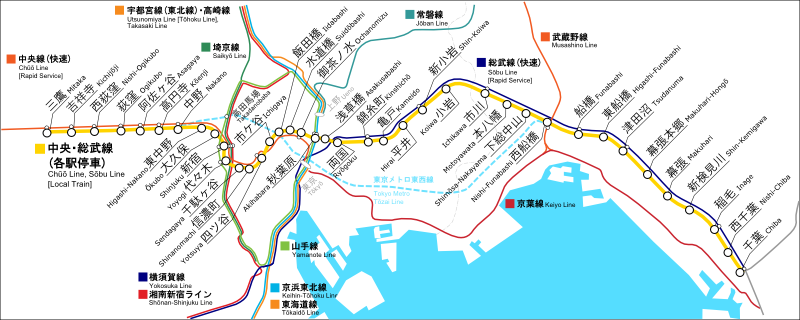
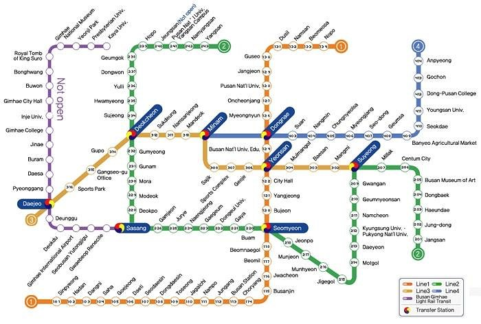

Eastern Asia Tips and Info

Japanese Transportation
- In Japan, Japan Railways Company (JR for short) is it's major train operator.
- Each region is assigned to one of six JR regions.
- Fare cards can be purchased and used throughout Japan (i.e Suica Card).
- Shinkansen bullet trains are great for longer distance travel.
- Shinkansen tickets can be added to your fare card (i.e Suica, Pasmo, etc.).
- To learn more about Suica and other prepaid transportation cards, please visit https://www.jrailpass.com/blog/using-japanese-ic-cards.

Pasmo and Suica prepaid transport crads.

© East Japan Railway Company All Rights Reserved.
South Korean Transportation
- South Korea's national railway comapny is KORAIL.
- There are multiple companies operating in South Korea, depending on region.
- Fare cards can be bought at airports or at a major train station.
- KORAIL also has a fast train that can take you all over South Korea.
- Depending on the fare card, it can be also used as a debit card.

© Busan Metropolitan City. All Rights Reserved.